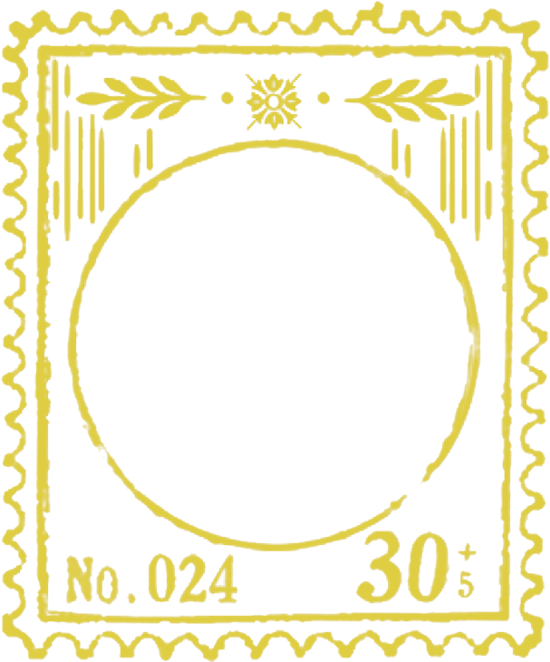

Call Me by Your Name is the final installment in a thematic trilogy Guadagnino calls his "Desire" trilogy; the other two parts were I Am Love (2009) and A Bigger Splash (2015).Guadagnino described his approach to the film as "lighthearted and simple", a departure from his previous work, which has been called "highly stylised [and] dazzling". Guadagnino considers Call Me by Your Name a "homage to the fathers of my life: my own father, and my cinematic ones", referring to the filmmakers Jean Renoir, Jacques Rivette, Éric Rohmer, and Bernardo Bertolucci, who he says inspired him.
Guadagnino has described Call Me by Your Name as a family-oriented film for the purpose of "transmission of knowledge and hope that people of different generations come to see the film together". He sees it not as a "gay" movie but as one about "the beauty of the newborn idea of desire, unbiased and uncynical", reflecting his motto of living "with a sense of joie de vivre". "We should always be very earnest with one's feelings, instead of hiding them or shielding ourselves", he said. He considers it an "uplifting film" about "being who you want to be and finding yourself into the gaze of the other in his or her otherness."
Guadagnino tried to avoid the flaws he had seen in most coming-of-age films, where growth is often portrayed as a result of resolving preconceived dilemmas such as an enforced choice between two lovers. He also wanted the story to follow two people "in the moment", rather than focus on an antagonist or a tragedy—an approach inspired by Maurice Pialat's À nos amours (1983). As someone who considers sex in film a representation of the characters' behavior and identity, Guadagnino was uninterested in including explicit sex scenes in the film. He explained his intention: "I wanted the audience to completely rely on the emotional travel of these people and feel first love... It was important to me to create this powerful universality, because the whole idea of the movie is that the other person makes you beautiful—enlightens you, elevates you."
Alongside a sexual coming-of-age motif, the movie also touches on the novel's theme of Elio discovering and connecting to his Jewish identity through the openly Jewish Oliver and in contrast to his own family, who are, as his mother puts it, "Jews of discretion". Their common Jewish identity is a part of what draws Elio and Oliver together and is represented by the Star of David necklace Oliver initially wears, which Elio is drawn to. The theme of sexual self-discovery is paralleled by the Jewish theme: in both cases, Elio starts out secretive about these parts of himself and develops greater self-acceptance, both journeys connected to Oliver's role in his life. There is a hint that Oliver may have given Elio his Star of David necklace shortly before they part ways in the train station. Elio's necklace can be clearly seen during the conversation from which the movie (and the novel) takes its title.